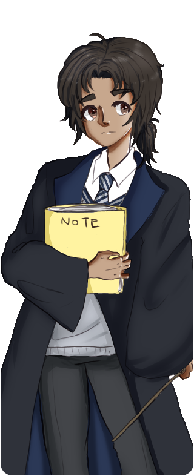
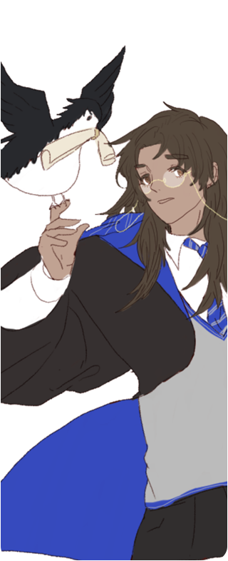
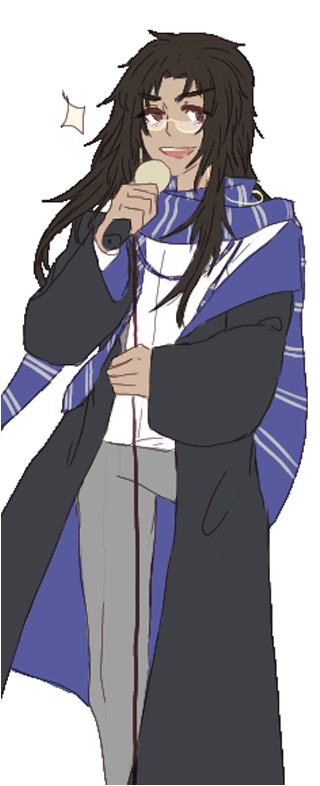
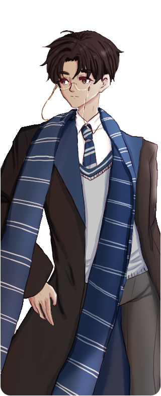
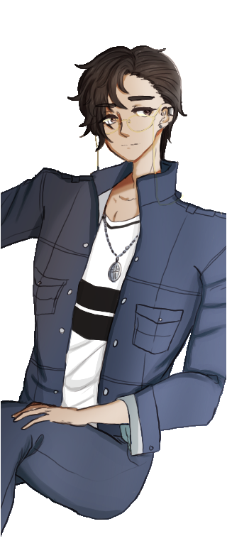
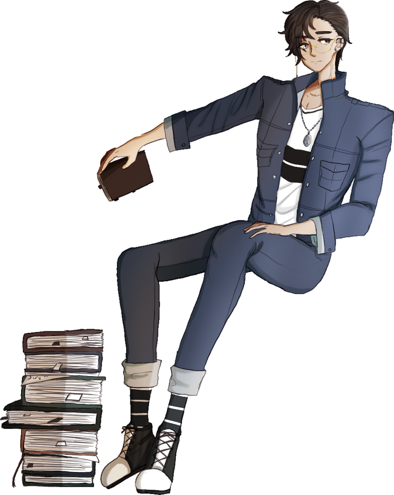

Patrick Khan
패트릭 칸





[ 너희를 박해하는 자를 사랑하라 ]
“ 록은 죽지 않아서 나락을 못 간다니까. ”
나이
25세
기숙사
래번클로
“의심을 무기로 삼고 사유를 신앙 삼아라.”
진영
불사조 기사단
직업
사학자
국적
인도계 영국인
혈통
머글 태생
키/무게
181cm/71kg
성별
시스젠더 남성
지팡이
너도밤나무/유니콘의 털/10인치/견고함
성격
# 사유하라
어떠한 일을 행동에 옮기기 전에 반드시 상당한 시간의 숙고를 거친다. 가끔은 생각하는 시간이 아깝다고 느끼는 일이 있지만, 신중한 검토 없이 몸을 움직였다가 큰일이 벌어지는 경우의 수를 어쩔 수 없이 늘 염두에 둔다. 그는 머글 사회에 두고 온 가족들이 있고 책임져야 하는 인간 관계가 여럿 있으니까.
# 발언하라
숙고를 거쳐 완성한 신념을 토대로 자신이 해야겠다고 마음 먹은 발언은 거침없이 늘어놓는다. 듣다 보면 “너 말이 좀 세다?” 싶은 순간이 있지만, 소위 ‘뚫린 입’이므로 멈추지 않는다. 보기보다 예민하고 속이 꼬인 것도 사실인 데다가 승부욕도 나름대로 있어서 설전만큼은 패배를 선언하고 싶어 하지 않아 무리를 하는 경향도 있다. 사교성이 나쁘지는 않으나 좋아하는 건 열성을 다해 사랑하는 한편 싫어하는 건 죽자사자 싫어하는, 중간이 없이 극단적으로 반응하는 구석이 있다.
# 의심하라
무슨 일이든 한 번은 의심한다. 이는 사람의 됨됨이를 의심한다기 보다는 ‘이것이 사실이 맞는가’를 검토하는 행위에 가깝다. 사교성이 나쁘지는 않으나 이 의심하는 기질 때문에 사회성이 좋지는 않다. 공동체가 제시하는 규범도 한 번은 의심하고 어째서 이것이 도덕률인가를 검토한 다음 스스로 생각하기에 합당하면 받아들인다. (이를 테면, 성실하게 살면 좋다는 등의 가치는 검토 후에 합리적이라고 판단하여 내면화했다.) 일종의 타고난 반골 기질. 모두가 ‘YES’라고 해도 본인이 생각하기에 ‘NO’라면 목에 칼이 들어와도 ‘NO’를 고집한다.
기타
● 런던 출신, 양친은 인도의 뭄바이에서 이민을 와서 영국으로 귀화한 인도계 영국인. 양친 모두 머글이며, 아래로 머글인 여동생이 둘 있다. 아버지는 변호사, 어머니는 가정 주부인 상당히 평범한 가정. 부모님의 신앙 생활의 영향을 받아 지금도 성공회 교도다. 아버지가 상당히 엄격했지만, 가족 간의 관계 자체는 문제가 없었다.
● 어린 시절엔 상당한 모범생이었으나 머글 초등학교에서 겪은 인종 차별, 호그와트에서 겪은 혈통 차별을 연속해서 겪으며 사춘기와 반항기를 심하게 거쳤다. 록에 심취한 건 14살 무렵의 일이다.
● 상당한 록 매니아로 특히 퀸의 팬이다. 취미로 일렉기타 연주를 즐기며, 호그와트에 재학하는 내내 학교에서 기타 치고 노래 부르고 헤드뱅잉을 한 까닭에 호그와트의 섹시록스타라는 해괴한 별명이 붙었다. 특히 브라이언 메이의 대단한 팬.
● 23살에 『페르소나』라는 제목의 역사 서적을 한 권 출판했다. 해당 서적은 ‘순수혈통 마법사라는 개념은 허울이며 그들의 뿌리는 역사적으로 머글에 있다.’는 전제를 역사학적으로 입증하는 내용을 담았다.
이 때문에 순수혈통 중심의 마법사 사회에 약간의 논란이 일어났고, 저자인 머글 태생 마법사에 대한 혹독한 비평이 몇 개 따라붙었다. 그러나 웬만한 대중들에게 터무니없는 책으로 취급 받았기 때문에 책 자체는 대중의 기억에서 묻힌 편이다. 간혹 이 독특한 서적을 구태여 구해다 읽고는 패트릭의 우편함에 가족의 암살을 예고하는 협박 편지도 몇 통인가 날아들었는데-암살이 실제로 벌어지진 않았다.-, 이미 마음 먹은 일은 끝장을 봐야 하는 성미 때문에 개의치 않고 다음 책을 출간하기 위해 새로운 사료를 수집하고 있다. 현재 그의 연구 주제는 초기 마법사 사회에 기여하였던 머글 태생 혹은 혼혈 마법사들의 역사적 업적을 발굴하는 것.
● 상기의 사유로, 현재는 성가신 협박 편지들로부터 몸을 숨기고-실제로 누군가가 지팡이를 들고 살인을 저지르러 올 거라고 믿진 않았지만, 집필하는 내내 잊을 만하면 그런 장난 같은 협박 편지를 받는 일이 유쾌하진 않았다.- 스코틀랜드 일대 산속에 위치한 조그마한 성공회 교회에 은신하면서 그 일대의 민간 설화들을 채록하고 있었다. 아무래도 산골이다 보니 조용하고 남아 있는 설화들도 많아 사료 수집에도 집필에도 순풍이 불고 있었다. 그러던 도중 재발한 심연 사건 소식을 듣고, 당장은 죽어 나가는 사람들을 살리기 위해 움직이는 편이 좋겠다는 판단을 내려 스코틀랜드에서 이동해 불사조 기사단으로 들어왔다. 아무래도 당장은 연구를 중지한 셈이지만, 수집했던 사료를 토대로 초반부의 초고를 쓰는 일은 간혹 목격된다.
● 몸을 숨기고 있던 성공회 성당이 머글들이 세운 성당이었던 탓에 사복이 머글 옷이다. 집필하거나 설화를 채록하러 다니지 않는 시간에는 주로 성당이 가지고 있는 조그마한 고아원 아이들을 가르치고 돌봐주면서 밥값을 했다. 아이들 사이에서는 아무래도 선생님 소릴 듣고 있으며, 주로 책을 읽어주거나 학교 숙제를 봐주는 등의 간단한 일을 한다.
● 가족 모두 패트릭의 행보에 큰 불만을 가지고 있진 않은 편이다. 실제로 책이 나오고 큰일이 난 건 아니었지만 설령 큰일이 난들 어떠하랴. 어디 그들 가족 받아주는 곳이 영국뿐이랴, 세계는 넓고 영국은 세상의 전부가 아닌 것을. 사람은 밥만으로는 살 수 없고, 그들 가족 모두 패트릭에게는 양보할 수 없는 정의가 있었다는 사실을 이해한다.
다만 패트릭의 신변에 위험이 닥칠 수 있다는 사실만큼은 걱정하고 있어서-그들은 협박 편지가 반쯤 장난일 거라고 생각하는 패트릭과 달리 마법사 사회에서 날아든 협박에 약간의 실효성이 있을 수 있다고 생각한다.- 성당에서 몸을 의탁해 지내는 중에도 핀과 비슈누를 통해 편지는 정기적으로 주고 받고 있었다. 이러나저러나 한 배를 탄 가족 공동체인 편.
● 라호르 비둘기 두 마리를 키운다. 이름은 핀과 비슈누.
● 왼쪽 등허리 쪽에 켈틱 십자가를 모티브로 한 문신이 있다.
● 21세부터 피우기 시작한 담배를 여지껏 못 끊었다. 성당에서 거의 아이들과 지내기 때문에 보고 배울까봐 차츰 줄여나가고는 있는데 잘은 안 되고 있다. 담배를 피울 때나 꽂히면 못 떨치는 성미를 좀 고쳐야 했던 건 아닌가 하는 생각을 하고 있다.
● 주량은 좀 되는 편이지만 담배에 비해 술은 즐기지 않는 편. 취하면 판단이 흐려지는 게 자존심 상한다는 게 그의 의견이다.
